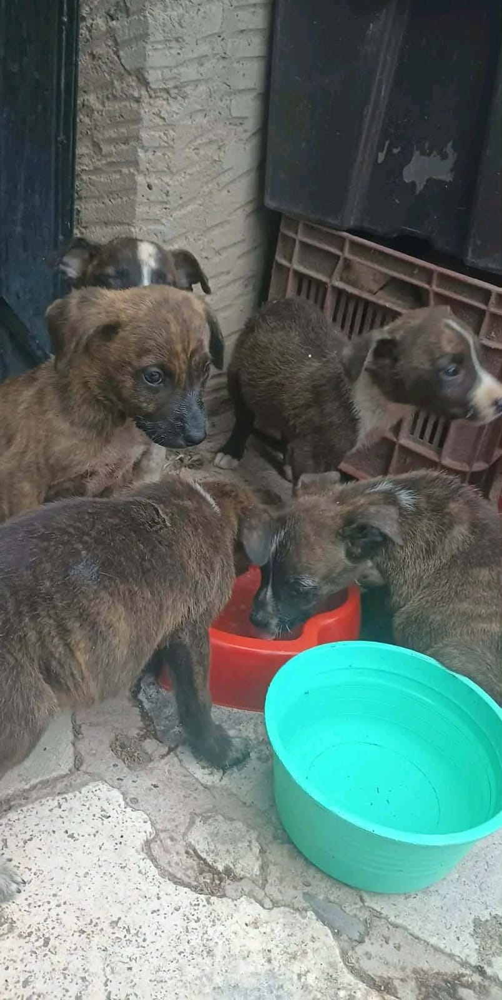

Miles de perros y gatos viven diariamente en situación de abandono, enfrentando hambre, enfermedades, maltrato y la falta de un hogar seguro. Esta realidad afecta tanto a los animales como a la comunidad, por lo que es necesario generar acciones que promuevan la adopción responsable, la esterilización y la educación sobre el bienestar animal.

En muchas comunidades es común encontrar perros y gatos viviendo en las calles sin acceso a alimento, atención veterinaria o un hogar responsable. Esta situación se origina por el abandono, la reproducción sin control y la falta de información sobre la tenencia responsable.
Además del sufrimiento que experimentan los animales, esta problemática también repercute en la comunidad, ya que incrementa los riesgos sanitarios, los accidentes y la sobrepoblación animal. Resolver este problema requiere la participación activa de la sociedad y el compromiso de promover una cultura de respeto y protección hacia todos los seres vivos.
Muchas personas abandonan a sus animales al no poder o no querer asumir la responsabilidad de su cuidado.
La reproducción sin control incrementa la cantidad de perros y gatos que terminan viviendo en situación de calle.
Muchas personas desconocen la importancia de la adopción responsable y del bienestar animal.
La ausencia de colaboración entre ciudadanos y organizaciones limita las acciones para atender esta problemática.
La población de perros y gatos sin hogar continúa creciendo cuando no existen acciones preventivas.
Los animales quedan expuestos a lesiones, desnutrición, enfermedades y actos de crueldad.
Los animales en situación de calle pueden sufrir atropellamientos y ocasionar accidentes viales.
La sobrepoblación animal genera problemas sanitarios, ambientales y de convivencia para la sociedad.
Atender esta problemática no solo mejora la calidad de vida de perros y gatos, sino que también fortalece la responsabilidad social y promueve una convivencia más armónica dentro de la comunidad. La adopción responsable, la esterilización y la educación son herramientas fundamentales para prevenir el abandono y construir un entorno donde los animales sean tratados con respeto y dignidad.